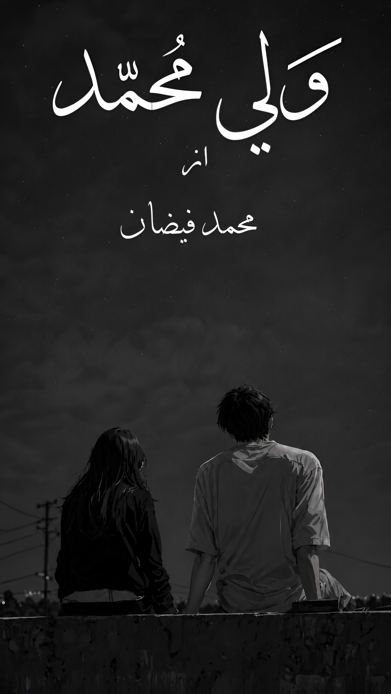

Some stories are read and forgotten. Others become a part of you. Wali Muhammad is a journey through faith, love, sacrifice, patience, and hope. Every chapter invites you into a world where every choice carries meaning and every emotion leaves a lasting impression.

Wali Muhammad is an Urdu social-romantic and islamic novel that explores the beauty of sincere relationships, unwavering faith, and the quiet strength found in patience. Through memorable characters and deeply emotional moments, the story reflects the struggles, dreams, and sacrifices that shape a person’s life. It is more than a novel. It is an experience that remains with readers long after the final page.
Experience the story that thousands of readers are discovering.
Read Now